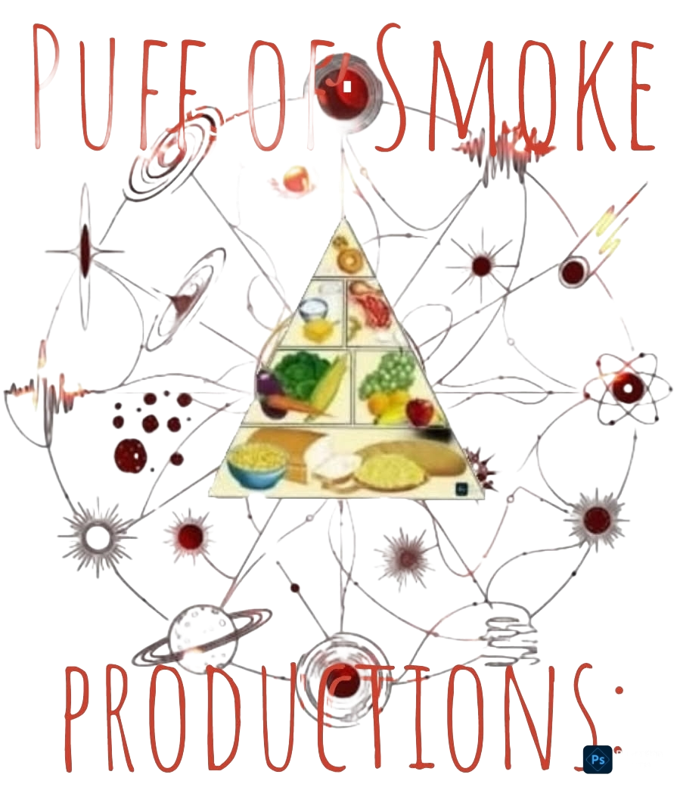
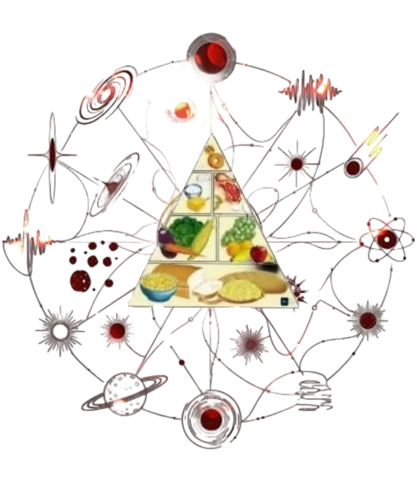

Age Five!
This youthful age is looking for
simple, powerful, and immediate rewards. The five-year-old's definition of "healthy" is having a body that can do amazing things and feel happy. This is our first attempt at narrowing down the fruits of our age pages.
Through the years we hope to evolve a far narrow focus to the essential needs of each specific age. Some of the most difficult ages to narrow will be these "milestone" ages. Those are years where great transitions take place in our personal evolutions. Healthy Facts of changes can truly overwhelm, like birth.
Escape now by returning to our homepage.
Age 5 is the first in many of these "milestone" ages, and a far greater foundational one of the utmost importance. We will find many expectations of the later years, lacking the foundational roots of this one at age 5. We expect it to be dense, fundamental, and refered back to often. Still, forgive us that it may begin a mess here, with unorganized facts and directions. These will narrow down, and find their focus.

Yet we make real this first attempt, to find the root healthy facts, that makes 5 years of humanly wise, lead to such long journeys of wide diversity. Amd what is the capabilities of humanity in this time? And how narrow is the science, to fostering a healthy physical and mental future from this year, of only five?
The Expectations:
At age five, a person's universe is a place of boundless energy and simple truths. This is the age of discovery, where the body, the mind, and the spirit are all learning how to work together. We’ll break down a five-year-old into a few core needs to help you understand the simple fundamentals we often forget as adults.
A five-year-old human is a curious, energetic life-form in a state of rapid physical and mental development. Their primary purpose appears to be exploration, learning, and play, with a secondary, biological function of consuming fuel and resting.
This organism is defined by a unique set of capabilities that are foundational to the human experience. Their body is built for constant motion. They can run, jump, and climb with impressive coordination. They can stand on one foot for up to 10 seconds and have developed the fine motor skills to draw basic shapes, print some letters, and use simple tools.
A five-year-old requires regular, high-quality energy intake ("food") to sustain their activity levels. They operate on a simple principle: high energy consumption requires high-quality fuel. They possess the ability to use complex vocalizations ("language") to tell stories and describe events. They are experts at asking "why?" to better understand their surroundings and limits.
A five-year-old's consciousness is a whirlwind of imagination and concrete thought. They are only beginning to understand the difference between right and wrong and are highly expressive—openly displaying a wide range of emotions from joy to frustration.

The Interest:
A five-year-old isn't looking for "longevity" or "well-being." They want to know what they can *do*. If a five-year-old wanted to be healthier, they would be looking for the answers to these kinds of questions:
How do I get super-fast so I can win the race at recess?
What should I eat to get superhero power to be big and strong?
How can I make sure I have enough energy to play all day?
What do I do to make sure my body is ready for fun tomorrow?
How do I scare the sugar bugs out of my teeth?
What makes me feel tired or grumpy?
The five-year-old is a curious, energetic life-form in a state of rapid physical and mental development. Their primary purpose appears to be exploration, learning, and play, with a secondary, biological function of consuming fuel and resting.
This image is defined by a unique set of capabilities that are foundational to the human experience. Their body is built for constant motion. They can run, jump, and climb with impressive coordination. They can stand on one foot for up to 10 seconds and have developed the fine motor skills to draw basic shapes, print some letters, and use simple tools.
A five-year-old requires regular, high-quality energy intake ("food") to sustain their activity levels. They operate on a simple principle: high energy consumption requires high-quality fuel. They possess the ability to use complex vocalizations ("language") to tell stories and describe events. They are experts at asking "why?" to better understand their surroundings and limits.
A five-year-old's consciousness is a whirlwind of imagination and concrete thought. They are only beginning to understand the difference between right and wrong and are highly expressive—openly displaying a wide range of emotions from joy to frustration.
Mental Health:
At age five, a person's universe is a place of boundless energy and simple truths. This is the age of discovery, where the body, the mind, and the spirit are all learning how to work together. We’ll break down a five-year-old into a few core needs to help you understand the simple fundamentals we often forget as adults.
1. The Mind: A Garden of Curiosity and Emotion. At this age, a child's mind is a sponge, asking "why?" about everything. They are learning to tell the difference between what's real and what's make-believe. They are also starting to understand and name their feelings, though they still need a lot of help to manage them.
Key Needs:
Emotional Safety:
A stable environment where feelings can be expressed and understood.
Mental Engagement:
Simple stories, games, and puzzles to build their thinking skills.
The term "fragile" is very fitting, because a five-year-old's mind is indeed in a very delicate and critical stage of development. Their mental health is just as important as their physical health. Here's what is important to know about the mental health of a child at this age:
Big Emotions in a Little Body:
A five-year-old's emotions can feel huge and overwhelming to them because they are still learning how to process and manage feelings. They can go from happy to frustrated to sad in an instant. This is normal, and it's a sign of a healthy brain learning to regulate itself.
The Foundation is a Safe Space:
A five-year-old's mental health is directly tied to the stability and security of their environment. The most important things for their emotional well-being are:
1) A Safe and Nurturing Home — A predictable routine and clear, loving boundaries.
2) Unconditional Love — The feeling that they are accepted and loved no matter what.
3) Validation — Acknowledging their feelings by saying things like, "I can see you're feeling frustrated right now." This teaches them to name and understand their emotions.
4) Play is Their Language — A child's mind processes the world through play. When a child is playing, they are often working through fears, anxieties, or new information. Providing them with opportunities for imaginative play, drawing, or storytelling is a crucial way to support their mental health.
Healthy Diet:
A 5-year-old's diet is another crucial part of their growth and development, but it doesn't have to be complicated. The best approach is to focus on a balanced and varied diet that provides them with the energy and nutrients they need for all that playing and learning. Here is some important advice, focusing on what they should eat: Think of a 5-year-old's diet as a balanced plate at every meal. The goal is to make healthy eating a normal and enjoyable part of their day.
The 5 Food Groups:
1. Grains:These should make up a large part of their plate; because they are the primary source of energy for a child. Choose whole grains whenever possible, such as oatmeal, whole-wheat bread, and brown rice.
2. Protein:Protein is essential for building strong muscles and a healthy body. Good sources include lean meats, fish, eggs, beans, nuts, and seeds.
3. Fruits and Vegetables: Think of them as the vitamins and minerals that give them "superpowers." Encourage them to "eat the rainbow" with a variety of colors like leafy greens, berries, carrots, and apples
4. Dairy:For strong bones, calcium is key. Milk, yogurt, and cheese are great options. If they have an intolerance, look for fortified alternatives.
5. Healthy Fats: Fats are important for brain development. Avocados, nuts, and fish are excellent sources.
The most important advice is to make food fun. Encourage them to help you choose fruits at the store or stir ingredients in the kitchen. Creating a positive relationship with food is the most powerful "healthy fact" you can give a child.
The Exercising:
2. The Body: A Vessel of Motion and Growth: A five-year-old is a physical marvel. Their bodies are built for constant movement—running, jumping, and climbing. The simple need is exercise and activity to develop their motor skills. They aren't training for a marathon; they're learning how to use their vessel.
Key Needs: Fuel:Simple, healthy foods for sustained energy.
Activity:Daily play and movement to build strength and coordination.Rest:A consistent sleep schedule to allow their growing body to recover.
Proper rest along with physical activity is just as important as diet for a healthy five-year-old. According to major health organizations like the Centers for Disease Control and Prevention (CDC), children aged "3 to 5" should be physically active throughout the day for their growth and development. There isn't a single, set number of minutes, but the general recommendation is at least 3 hours (180 minutes) of physical activity per day.
Here's a breakdown of what that means: It's not about formal exercise.** This includes all types of movement, from light activities to more vigorous ones. The activity should be varied.** It's about a mix of active play, running, jumping, climbing, and other movements. Spread it out.** The 180 minutes don't need to be all at once. It's about breaking up long periods of sitting with movement. For example, a child could get 15-20 minutes of activity every hour they are awake.
Key takeaway: The goal is to encourage a child's natural inclination to move. Playing tag, dancing, riding a tricycle, jumping on a playground, and playing with a ball all count as valuable physical activity. The more they are moving, the better.
Conclusions:
It sure is a confusing start. But some facts are clear. It is a milestone age where many changes are taking place at a critical time in the human life. It is a very sensitive and exploring time, where many experiences can affect the person throughout their lifetime. This is a delicate year where time should be taken to invest care in the lasting impressions left upon this age. Contact us with any corrections or additions that you think could enhance this webpage of Healthy Facts.
Contact Us:
"Puff Of Smoke" productions.
delislesr(at)gmail(dot)com
Thank You:
...for your visit. It is truly this shared effort that wishes you a healthier and more fulfilling future.
|